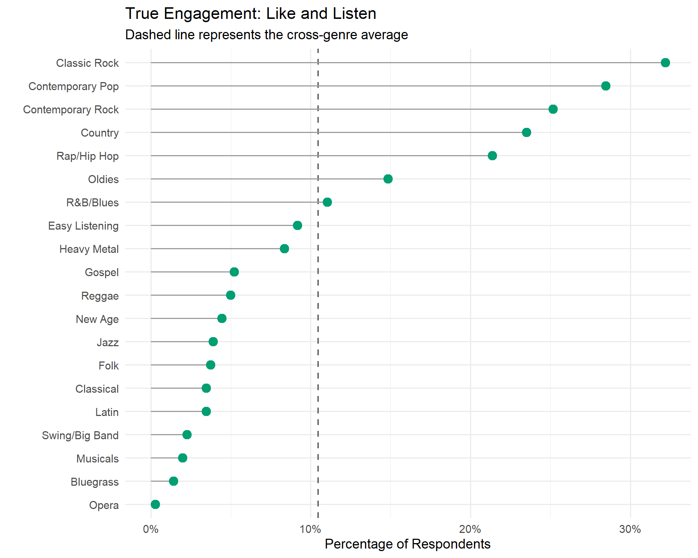
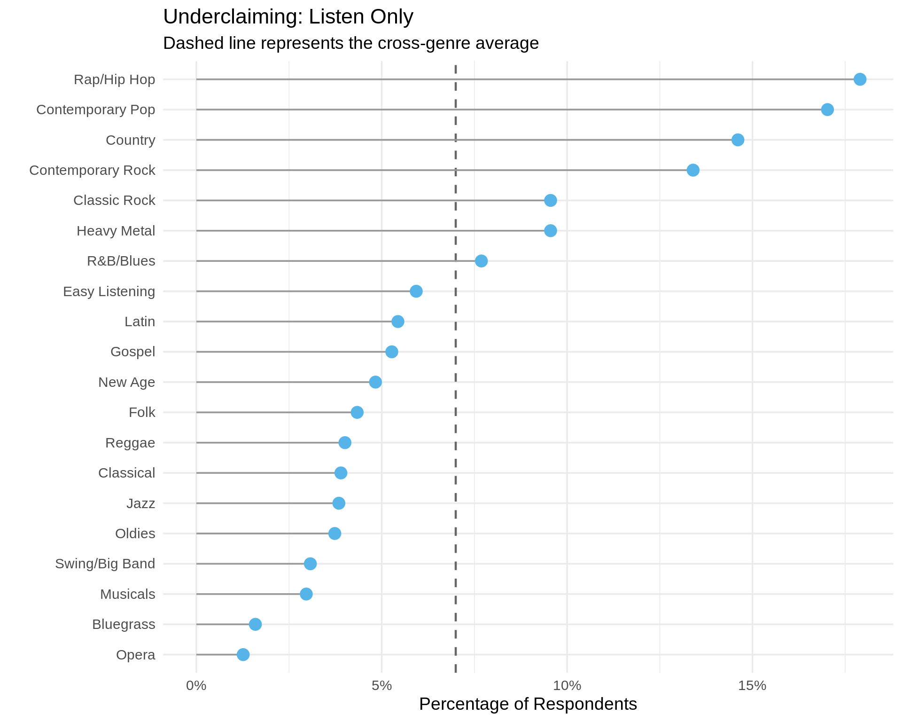
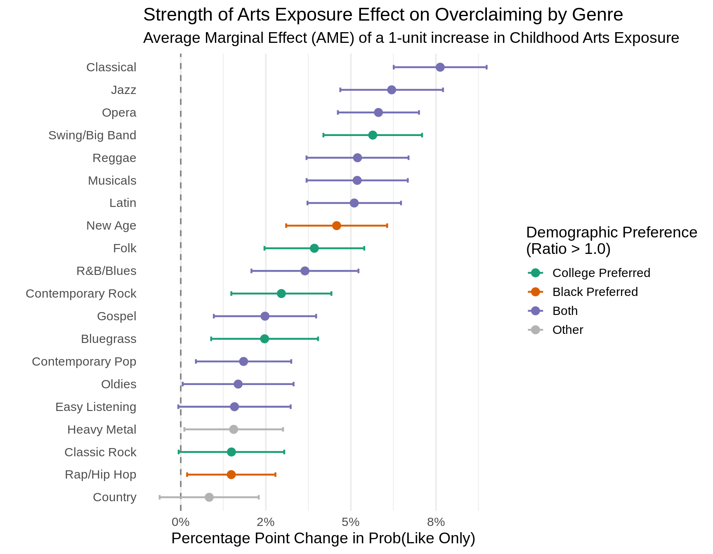
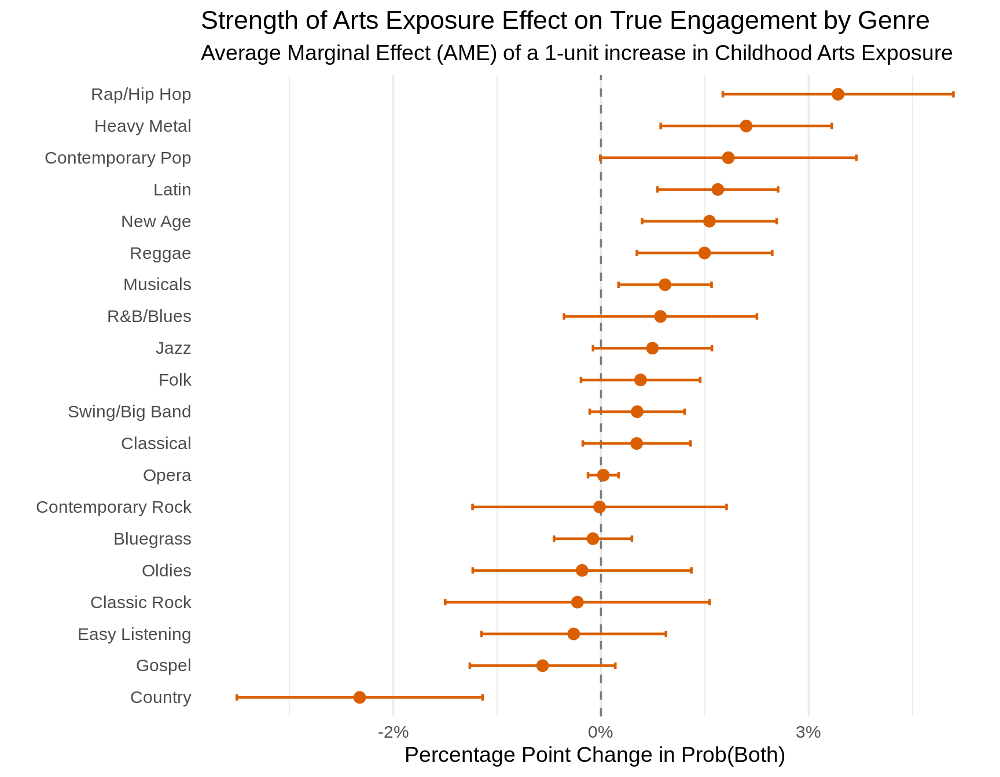
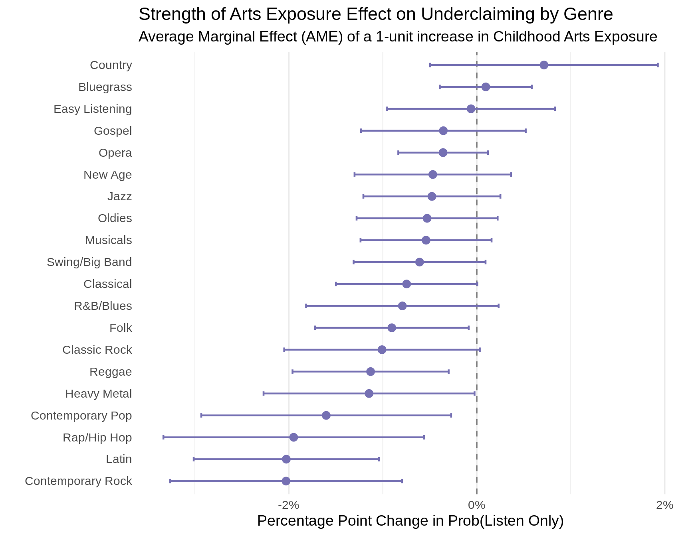
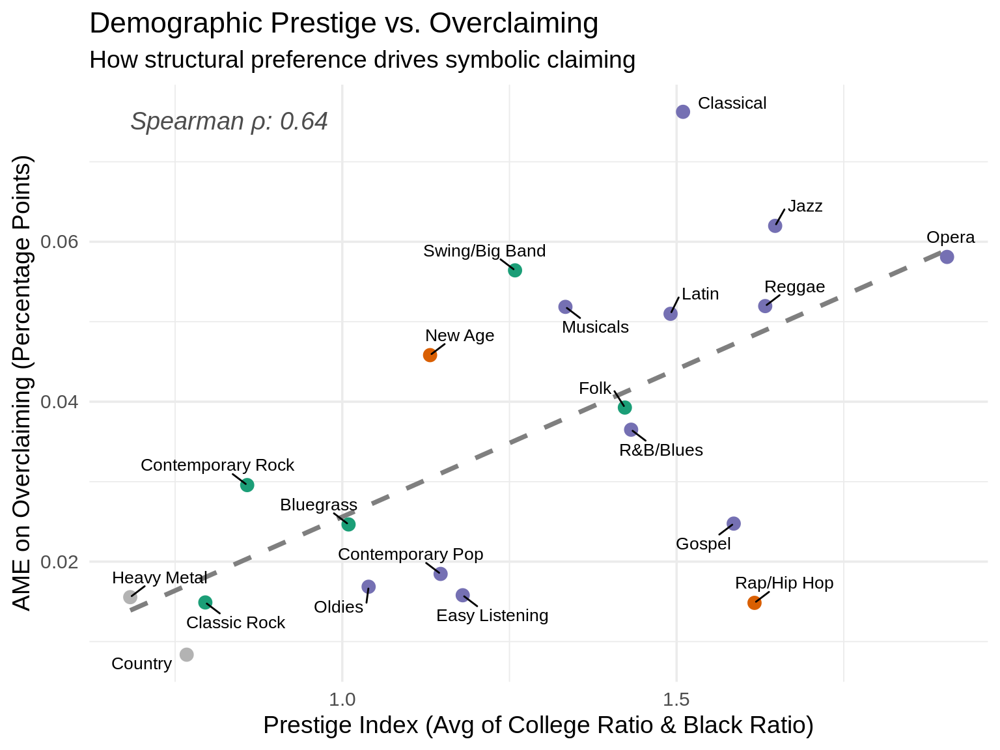

Code
library(haven)
library(dplyr)
library(tidyr)
library(ggplot2)
library(nnet)
library(sandwich)
library(lmtest)
library(marginaleffects)This report was generated using AI under general human direction. At the time of generation, the contents have not been comprehensively reviewed by a human analyst.
The core goal of this analysis is to study “overclaiming” in musical tastes: instances where individuals report that they like a musical genre in the abstract, but that genre is entirely absent when querying the artists and songs actually present on their recent playlists.
To capture this phenomenon, we wrangle survey data to explicitly map abstract genre preferences to concrete listening behavior. We then deploy a multinomial logistic regression framework with two-way clustered standard errors (accounting for both person-level and genre-level variance) to identify which demographic profiles are most prone to overclaiming.
The foundational step requires taking raw, self-reported recent streams/artists and mapping them to 20 consistent numeric genre codes. We then align these 20 genres with the 20 corresponding survey questions regarding abstract genre liking, while preparing several core demographic predictors.
like_music_genres_21 to _40): Respondents were asked to rate their affinity for 20 broad musical genres (e.g., Classical, Jazz, Rap/Hip Hop) on a 1–7 scale (from 1 = “Very Much Dislike” to 7 = “Very Much Like”).genre_final1 to 10): Respondents were asked to generate their top 10 most listened-to musical artists/bands. For many respondents, this was extracted directly by having them sort their iTunes or Spotify accounts by “Plays” (captured in the stream_source variable). These specific artists were then manually coded into the corresponding 20 broad genre categories by the researchers.child_arts): The survey asked, “During your childhood how frequently did your parents or guardians engage you with the arts?” on a scale from 1 (Not At All) to 7 (All The Time).educ2): The survey asked, “What is the highest degree or level of school you have completed?” (ranging from less than 9th grade to an advanced/graduate degree).parent_educ): We generated a composite variable by taking the maximum educational attainment of the respondent’s mother (mom_educ) and father (dad_educ).race5): A 5-category self-identification mapping (White, Black, Hispanic, Asian, Other/Mixed).stream_source and how_listen variables, classifying whether the respondent drew their top artists directly from Spotify, iTunes, Winamp, or via free recall (“rotation”).library(haven)
library(dplyr)
library(tidyr)
library(ggplot2)
library(nnet)
library(sandwich)
library(lmtest)
library(marginaleffects)We process the core dataset to create two binary indicators for each of the 20 genres: 1. Liking (like): Scored as 1 if the respondent rated their liking of the genre as a 5, 6, or 7 on a 7-point Likert scale. 2. Listening (listen): Scored as 1 if the genre appeared anywhere in their top 10 reported playlist artists.
We then pivot this data into a long format where each row represents a single person-genre pair.
# Load the base dataset
df_raw <- read_dta("dta/analysis_time_CCC.dta")
# Create IDs
df_raw$id <- 1:nrow(df_raw)
# Map the 20 abstract liking questions to the 20 genre codes
genre_mapping <- list(
g1=21, g2=22, g3=24, g4=39, g5=26, g6=36, g7=37, g8=23, g9=31, g10=27,
g11=28, g12=40, g13=29, g14=30, g15=25, g16=32, g17=38, g18=33, g19=34, g20=35
)
# Calculate binary like (5-7) and binary listen indicators
for (g in 1:20) {
like_col <- paste0("like_music_genres_", genre_mapping[[paste0("g", g)]])
df_raw[[paste0("like_g", g)]] <- ifelse(df_raw[[like_col]] >= 5 & df_raw[[like_col]] <= 7, 1, 0)
df_raw[[paste0("listen_g", g)]] <- 0
for (i in 1:10) {
df_raw[[paste0("listen_g", g)]] <- df_raw[[paste0("listen_g", g)]] | (df_raw[[paste0("genre_final", i)]] == g)
}
}
# Pivot data to long format for person-genre analysis
# We also create a composite parental education variable and extract platform source
df_long <- df_raw %>%
mutate(
parent_educ = pmax(mom_educ, dad_educ, na.rm = TRUE),
platform = case_when(
grepl("spotify", stream_source, ignore.case = TRUE) ~ "Spotify",
grepl("itunes", stream_source, ignore.case = TRUE) ~ "iTunes",
grepl("winamp", stream_source, ignore.case = TRUE) ~ "Winamp",
grepl("rotation", stream_source, ignore.case = TRUE) & !grepl("itunes|spotify|winamp", stream_source, ignore.case = TRUE) ~ "Free Recall",
stream_source == "" ~ "Free Recall",
TRUE ~ "Other"
)
) %>%
select(id, educ2, parent_educ, child_arts, agecat, income, female, urban_rural2, race5, social, platform, stream_source,
starts_with("like_g"), starts_with("listen_g")) %>%
pivot_longer(
cols = matches("^(like|listen)_g\\d+"),
names_to = c(".value", "genre_id"),
names_pattern = "^([a-z]+)_g(\\d+)$"
) %>%
mutate(genre_id = as.factor(genre_id))To study overclaiming comprehensively, we frame the behavior as a multi-state competing outcome. For every genre-person pair, a respondent can fall into one of four mutually exclusive complex tastes:
df_long <- df_long %>%
mutate(
engagement_state = case_when(
like == 0 & listen == 0 ~ "Neither",
like == 0 & listen == 1 ~ "ListenOnly",
like == 1 & listen == 0 ~ "LikeOnly",
like == 1 & listen == 1 ~ "Both"
),
engagement_state = factor(engagement_state, levels = c("Neither", "ListenOnly", "LikeOnly", "Both"))
)Before fitting inferential models, we can visualize the magnitude of these different complex tastes across the genres. We calculate the absolute proportion of respondents who fall into each state (Listen Only, Like Only, Both, or Neither) for each of the 20 genres.
genre_labels <- data.frame(
genre_id = as.character(1:20),
genre_name = c(
"Swing/Big Band", "Bluegrass", "R&B/Blues", "Classic Rock", "Classical",
"Contemporary Pop", "Contemporary Rock", "Country", "Easy Listening", "Folk",
"Gospel", "Heavy Metal", "Jazz", "Latin", "Musicals",
"New Age", "Oldies", "Opera", "Rap/Hip Hop", "Reggae"
)
)
# Calculate proportions of each engagement state by genre
df_summary <- df_long %>%
group_by(genre_id, engagement_state) %>%
summarize(count = n(), .groups = "drop_last") %>%
mutate(prop = count / sum(count)) %>%
ungroup() %>%
left_join(genre_labels, by = "genre_id")
# Order genres by how frequently they are Overclaimed (LikeOnly)
order_by_overclaim <- df_summary %>%
filter(engagement_state == "LikeOnly") %>%
arrange(prop) %>%
pull(genre_name)
df_summary <- df_summary %>%
mutate(genre_name = factor(genre_name, levels = order_by_overclaim)) %>%
mutate(engagement_state = factor(engagement_state,
levels = c("LikeOnly", "ListenOnly", "Both", "Neither"),
labels = c("Like Only (Overclaim)", "Listen Only (Underclaim)", "Both (True Engagement)", "Neither")))
# We will create three separate plots, one for each active engagement state.
# For each plot, the y-axis will be dynamically ordered by the prevalence of that specific state.
df_active <- df_summary %>% filter(engagement_state != "Neither")
plot_state <- function(state_name, title, color) {
df_filtered <- df_active %>%
filter(engagement_state == state_name) %>%
arrange(prop) %>%
mutate(genre_name = factor(genre_name, levels = genre_name))
avg_prop <- mean(df_filtered$prop)
p <- ggplot(df_filtered, aes(x = prop, y = genre_name)) +
geom_vline(xintercept = avg_prop, linetype = "dashed", color = "gray40", linewidth = 0.8) +
geom_segment(aes(x = 0, xend = prop, y = genre_name, yend = genre_name), color = "gray60") +
geom_point(color = color, size = 4) +
scale_x_continuous(labels = scales::percent_format(accuracy = 1)) +
theme_minimal(base_size = 14) +
labs(
title = title,
subtitle = "Dashed line represents the cross-genre average",
x = "Percentage of Respondents",
y = ""
)
return(p)
}
# 1. Overclaiming Plot
p_overclaim <- plot_state("Like Only (Overclaim)", "Overclaiming: Like Only", "#E69F00")
ggsave("Plots/Prevalence_Overclaiming.png", p_overclaim, width = 8, height = 6, dpi = 300)
# 2. True Engagement Plot
p_both <- plot_state("Both (True Engagement)", "True Engagement: Like and Listen", "#009E73")
ggsave("Plots/Prevalence_True_Engagement.png", p_both, width = 8, height = 6, dpi = 300)
# 3. Underclaiming Plot
p_underclaim <- plot_state("Listen Only (Underclaim)", "Underclaiming: Listen Only", "#56B4E9")
ggsave("Plots/Prevalence_Underclaiming.png", p_underclaim, width = 8, height = 6, dpi = 300)
# Display the plots in the report
p_overclaim
p_both
p_underclaim
The plots above vividly map out the baseline landscape of complex musical tastes before any demographic modeling is applied. By evaluating the raw proportions of these states, a stark division in the musical landscape emerges.
Culturally symbolic genres are completely dominated by symbolic overclaiming. Genres like Easy Listening, Reggae, Classical, Oldies, and Musicals show massive rates of the “Like Only” state—often exceeding 50% or even 60% of all respondents—yet they display almost zero “True Engagement.” In other words, people overwhelmingly claim an affinity for these styles when surveyed, but they almost never actually put them on their personal playlists.
In contrast, the core of true musical engagement is concentrated in just a few massive genres. Contemporary Pop, Contemporary Rock, and Rap/Hip Hop boast the highest rates of “Both.” For these styles, abstract liking tightly matches concrete streaming behavior; they are the active pillars of actual daily consumption rather than abstract symbolic markers.
Finally, the plots highlight the overall rarity of underclaiming (the “guilty pleasure” dynamic). Sociologically, we might expect people to actively hide their consumption of heavily stigmatized or “lowbrow” genres (i.e., listening to a genre while refusing to report liking it). However, the “Listen Only” state is universally rare across the board. The only genre where it is noticeably present is Contemporary Pop, which likely suggests passive, ambient consumption—hearing it constantly in public spaces or on the radio—rather than a deliberate attempt to hide a guilty pleasure.
We deploy a fixed-effects multinomial logistic regression (nnet::multinom) to model the probability of falling into these states.
Because our data is in a long format where the same respondent appears 20 times (once for each genre), the observations are not independent. To prevent artificially low \(p\)-values, we calculate Two-Way Clustered Standard Errors. This approach clusters the standard errors simultaneously at the respondent level (id) and the genre level (genre_id), accounting for variance driven by individual respondent tendencies as well as baseline differences in how heavily specific genres are overclaimed.
model_fixed <- multinom(
engagement_state ~ educ2 + parent_educ + child_arts + agecat + female + income + as.factor(race5) + as.factor(platform),
data = df_long
)# Calculate two-way clustered standard errors (Person + Genre)
robust_vcov_twoway <- vcovCL(model_fixed, cluster = df_long[, c("id", "genre_id")])
robust_se_twoway <- sqrt(diag(robust_vcov_twoway))
# Manually compute z-scores and p-values
est <- summary(model_fixed)$coefficients
se_mat_twoway <- matrix(robust_se_twoway, nrow = nrow(est), ncol = ncol(est), byrow = TRUE)
z_vals_twoway <- est / se_mat_twoway
p_vals_twoway <- (1 - pnorm(abs(z_vals_twoway), 0, 1)) * 2
# Helper function to extract cleanly and build a nice gt table
library(gt)
library(dplyr)
library(aod)
make_clean_df_twoway <- function(row_idx) {
df <- data.frame(
Predictor = colnames(est),
Estimate = round(est[row_idx, ], 3),
Robust_SE = round(se_mat_twoway[row_idx, ], 3),
Z = round(z_vals_twoway[row_idx, ], 2),
P_Value = round(p_vals_twoway[row_idx, ], 3)
)
# Clean up predictor names
df <- df %>%
mutate(Predictor = case_when(
Predictor == "(Intercept)" ~ "Intercept",
Predictor == "educ2" ~ "Education",
Predictor == "parent_educ" ~ "Parental Education",
Predictor == "child_arts" ~ "Childhood Arts Exposure",
Predictor == "agecat" ~ "Age Category",
Predictor == "female" ~ "Gender ID (Woman)",
Predictor == "income" ~ "Household Income",
Predictor == "as.factor(race5)2" ~ "Race: Black",
Predictor == "as.factor(race5)3" ~ "Race: Hispanic",
Predictor == "as.factor(race5)4" ~ "Race: Asian",
Predictor == "as.factor(race5)5" ~ "Race: Other/Mixed",
Predictor == "as.factor(platform)iTunes" ~ "Platform: iTunes",
Predictor == "as.factor(platform)Other" ~ "Platform: Other",
Predictor == "as.factor(platform)Spotify" ~ "Platform: Spotify",
Predictor == "as.factor(platform)Winamp" ~ "Platform: Winamp",
TRUE ~ Predictor
)) %>%
mutate(
Sig = case_when(
P_Value < 0.001 ~ "***",
P_Value < 0.01 ~ "**",
P_Value < 0.05 ~ "*",
P_Value < 0.1 ~ ".",
TRUE ~ ""
)
)
return(df)
}
format_gt_table <- function(df, title) {
df %>%
gt() %>%
tab_header(
title = md(title)
) %>%
cols_label(
Robust_SE = "Robust SE",
P_Value = "p-value",
Sig = ""
) %>%
fmt_number(
columns = c(Estimate, Robust_SE, Z),
decimals = 3
) %>%
opt_stylize(style = 6, color = "cyan")
}Before looking at the coefficients for specific engagement states, we test the overall, joint significance of each predictor across the entire multinomial model using robust Wald tests. Because our model estimates three separate equations simultaneously (ListenOnly vs. Neither, LikeOnly vs. Neither, and Both vs. Neither), a single categorical variable like Race (with 4 dummy indicators) actually generates 12 separate coefficients. The robust Wald test calculates a single \(\chi^2\) statistic with 12 degrees of freedom to determine if Race, as a global construct, significantly improves model fit above zero.
This protects against “p-hacking” individual coefficients and provides a rigorous hierarchy of variable importance.
| Joint Significance of Predictors (Robust Wald Tests) | ||||
| Null Hypothesis: Coefficients are zero across all states | ||||
| Predictor | χ2 | DF | p-value | |
|---|---|---|---|---|
| Childhood Arts Exposure | 60.16 | 3 | 0.0000 | *** |
| Platform (Joint) | 24.31 | 9 | 0.0038 | ** |
| Race (Joint) | 16.68 | 12 | 0.1620 | |
| Education | 15.13 | 3 | 0.0017 | ** |
| Age Category | 8.19 | 3 | 0.0422 | * |
| Household Income | 3.97 | 3 | 0.2646 | |
| Parental Education | 2.30 | 3 | 0.5118 | |
| Gender ID (Woman) | 0.62 | 3 | 0.8909 | |
| Predictors of Overclaiming (Like Only) | |||||
| Predictor | Estimate | Robust SE | Z | p-value | |
|---|---|---|---|---|---|
| Intercept | −1.242 | 0.321 | −3.870 | 0.000 | *** |
| Education | 0.067 | 0.029 | 2.300 | 0.021 | * |
| Parental Education | −0.027 | 0.020 | −1.390 | 0.163 | |
| Childhood Arts Exposure | 0.183 | 0.024 | 7.650 | 0.000 | *** |
| Age Category | 0.056 | 0.041 | 1.390 | 0.164 | |
| Gender ID (Woman) | 0.044 | 0.068 | 0.640 | 0.519 | |
| Household Income | −0.001 | 0.010 | −0.050 | 0.956 | |
| Race: Black | 0.201 | 0.198 | 1.020 | 0.310 | |
| Race: Hispanic | 0.035 | 0.171 | 0.200 | 0.839 | |
| Race: Asian | 0.271 | 0.153 | 1.770 | 0.077 | . |
| Race: Other/Mixed | 0.106 | 0.150 | 0.700 | 0.482 | |
| Platform: iTunes | 0.080 | 0.078 | 1.030 | 0.302 | |
| Platform: Spotify | 0.043 | 0.083 | 0.520 | 0.605 | |
| Platform: Winamp | 0.668 | 0.454 | 1.470 | 0.141 | |
| Predictors of Underclaiming (Listen Only) | |||||
| Predictor | Estimate | Robust SE | Z | p-value | |
|---|---|---|---|---|---|
| Intercept | −1.577 | 0.285 | −5.540 | 0.000 | *** |
| Education | 0.081 | 0.024 | 3.400 | 0.001 | ** |
| Parental Education | −0.019 | 0.022 | −0.860 | 0.391 | |
| Childhood Arts Exposure | −0.017 | 0.019 | −0.890 | 0.375 | |
| Age Category | 0.000 | 0.032 | −0.010 | 0.993 | |
| Gender ID (Woman) | −0.015 | 0.076 | −0.190 | 0.847 | |
| Household Income | −0.015 | 0.010 | −1.510 | 0.132 | |
| Race: Black | 0.093 | 0.146 | 0.640 | 0.525 | |
| Race: Hispanic | 0.230 | 0.126 | 1.820 | 0.069 | . |
| Race: Asian | 0.301 | 0.108 | 2.780 | 0.005 | ** |
| Race: Other/Mixed | 0.010 | 0.130 | 0.080 | 0.937 | |
| Platform: iTunes | −0.345 | 0.090 | −3.820 | 0.000 | *** |
| Platform: Spotify | −0.242 | 0.098 | −2.480 | 0.013 | * |
| Platform: Winamp | −0.166 | 0.464 | −0.360 | 0.721 | |
| Predictors of True Engagement (Like and Listen) | |||||
| Predictor | Estimate | Robust SE | Z | p-value | |
|---|---|---|---|---|---|
| Intercept | −1.633 | 0.491 | −3.320 | 0.001 | ** |
| Education | 0.063 | 0.025 | 2.530 | 0.011 | * |
| Parental Education | −0.026 | 0.022 | −1.190 | 0.233 | |
| Childhood Arts Exposure | 0.106 | 0.025 | 4.230 | 0.000 | *** |
| Age Category | 0.004 | 0.057 | 0.070 | 0.945 | |
| Gender ID (Woman) | 0.066 | 0.089 | 0.750 | 0.455 | |
| Household Income | 0.006 | 0.009 | 0.720 | 0.469 | |
| Race: Black | 0.028 | 0.309 | 0.090 | 0.929 | |
| Race: Hispanic | −0.089 | 0.182 | −0.490 | 0.625 | |
| Race: Asian | 0.115 | 0.187 | 0.610 | 0.539 | |
| Race: Other/Mixed | −0.009 | 0.184 | −0.050 | 0.963 | |
| Platform: iTunes | −0.139 | 0.081 | −1.720 | 0.085 | . |
| Platform: Spotify | −0.036 | 0.071 | −0.510 | 0.609 | |
| Platform: Winamp | 0.522 | 0.583 | 0.900 | 0.371 | |
The application of two-way clustering reveals a comprehensive picture of genre engagement. Childhood arts exposure (child_arts) is the strongest and most robust predictor of overclaiming (reporting liking without listening). While it also increases the probability of True Engagement, its effect on Overclaiming is almost twice as strong. Conversely, Education (educ2) significantly predicts Underclaiming (listening without reporting liking), suggesting that highly educated individuals may consume genres they decline to formally endorse.
To make these multinomial dynamics intuitive, we calculate the marginal predicted probabilities for each of the four states across the spectrum of childhood arts exposure. We apply our two-way cluster-robust variance-covariance matrix to generate the 95% confidence intervals.
# Generate robust predictions using the two-way clustered vcov matrix
pred_marg <- predictions(
model_fixed,
newdata = datagrid(child_arts = 1:7),
vcov = robust_vcov_twoway
)
pred_df_rob <- as.data.frame(pred_marg) %>%
mutate(response.level = case_when(
group == "Neither" ~ "Neither (No Like, No Listen)",
group == "ListenOnly" ~ "Listen Only (Underclaim)",
group == "LikeOnly" ~ "Like Only (Overclaim)",
group == "Both" ~ "Both (True Engagement)"
)) %>%
mutate(response.level = factor(response.level, levels = c(
"Neither (No Like, No Listen)",
"Listen Only (Underclaim)",
"Both (True Engagement)",
"Like Only (Overclaim)"
)))
arts_labels <- c("1 (None)", "2", "3", "4 (Moderate)", "5", "6", "7 (Extensive)")
p_margins <- ggplot(pred_df_rob, aes(x = child_arts, y = estimate, color = response.level)) +
geom_errorbar(aes(ymin = conf.low, ymax = conf.high), width = 0.2, linewidth = 0.8, alpha = 0.15, position = position_dodge(width = 0.5)) +
geom_point(size = 3, position = position_dodge(width = 0.5)) +
coord_flip() +
scale_color_brewer(palette = "Dark2") +
scale_x_continuous(breaks = 1:7, labels = arts_labels) +
theme_minimal(base_size = 14) +
theme(
panel.grid.major.y = element_blank(),
panel.grid.minor.y = element_blank(),
legend.position = "bottom",
legend.direction = "vertical"
) +
labs(
title = "Effect of Childhood Arts Exposure on Genre Engagement",
subtitle = "95% CIs computed via two-way cluster-robust standard errors (Person & Genre)",
x = "Level of Childhood Arts Exposure",
y = "Predicted Probability",
color = "Complex Tastes"
)
# Save to Plots directory
dir.create("Plots", showWarnings = FALSE)
ggsave("Plots/ChildArts_Effects_RobustCI_Errorbars.png", p_margins, width = 9, height = 7, dpi = 300)
p_margins
As childhood arts exposure increases, respondents genuinely engage with more music (the “True Engagement” estimates increase). However, their propensity to overclaim genres (“Like Only”) rises sharply, overtaking the baseline state of ignoring the genre completely. Early arts exposure creates broader actual listening habits, but it creates vastly broader claimed listening habits.
Thus far, our multinomial models have pooled all 20 genres together, treating the effect of demographic predictors as uniform across the entire musical landscape. However, we suspect that overclaiming is deeply genre-dependent.
To formally test this, we evaluate three nested models: 1. Base Demographics: A pooled model assuming demographic effects (and the baseline rate of overclaiming) are identical across all genres. 2. Genre Fixed Effects: Adding independent intercepts for all 20 genres (accounting for the fact that Classical is inherently overclaimed more globally than Country, independent of demographics). 3. Genre Interactions: Adding an interaction between childhood arts exposure and genre (allowing the specific slope or effect of arts exposure to vary uniquely for every single genre).
We compare these models using Akaike Information Criterion (AIC), Bayesian Information Criterion (BIC), and Deviance. In all three metrics, lower values indicate a superior balance of model accuracy and parsimony.
| Multinomial Model Fit Comparison | |||
| Lower AIC and BIC indicate better model fit | |||
| Model | AIC | BIC | Deviance |
|---|---|---|---|
| 1. Base Demographics | 58,995 | 59,336 | 58,911 |
| 2. Base + Genre Fixed Effects | 52,830 | 53,633 | 52,632 |
| 3. Base + Genre FEs + Arts × Genre Interactions | 52,699 | 53,963 | 52,387 |
To test whether early arts exposure increases overclaiming uniformly across all genres, or if it specifically drives overclaiming of culturally legitimated (highbrow) genres, we can fit a fixed-effects model that interacts child_arts with genre_id.
To quantify and formally compare the strength of this effect across genres, we calculate the Average Marginal Effect (AME) of a 1-unit increase in childhood arts exposure for each genre, isolating the “Like Only” state.
# Calculate the Average Marginal Effect (slope) of child_arts for each genre
ame_genre <- avg_slopes(
model_int,
variables = "child_arts",
by = "genre_id"
)
# Determine demographic preferences for highlighting
pref_df <- df_long %>%
mutate(
# College: BA or Grad Degree. Baseline: HS or less (excluding 'some college' & 'associates')
college = ifelse(as.numeric(educ2) >= 5, TRUE, ifelse(as.numeric(educ2) <= 2, FALSE, NA)),
# Black
black = ifelse(as.numeric(race5) == 2, TRUE, ifelse(as.numeric(race5) == 1, FALSE, NA))
) %>%
group_by(genre_id) %>%
summarize(
ratio_col = mean(like[college == TRUE], na.rm = TRUE) / mean(like[college == FALSE], na.rm = TRUE),
ratio_black = mean(like[black == TRUE], na.rm = TRUE) / mean(like[black == FALSE], na.rm = TRUE)
)
# Filter for the LikeOnly state and arrange by effect size
ame_df <- as.data.frame(ame_genre) %>%
filter(group == "LikeOnly") %>%
mutate(genre_id = as.character(genre_id)) %>%
left_join(genre_labels, by = "genre_id") %>%
left_join(pref_df, by = "genre_id") %>%
mutate(
pref_group = case_when(
ratio_col > 1.0 & ratio_black > 1.0 ~ "Both",
ratio_col > 1.0 ~ "College Preferred",
ratio_black > 1.0 ~ "Black Preferred",
TRUE ~ "Other"
),
pref_group = factor(pref_group, levels = c("College Preferred", "Black Preferred", "Both", "Other"))
) %>%
arrange(estimate) %>%
mutate(genre_name = factor(genre_name, levels = genre_name))
p_ame <- ggplot(ame_df, aes(x = estimate, y = genre_name)) +
geom_vline(xintercept = 0, linetype = "dashed", color = "gray50") +
geom_errorbar(aes(xmin = conf.low, xmax = conf.high, color = pref_group), width = 0.2, linewidth = 0.8) +
geom_point(aes(color = pref_group), size = 3) +
scale_color_manual(
values = c(
"College Preferred" = "#1b9e77",
"Black Preferred" = "#d95f02",
"Both" = "#7570b3",
"Other" = "gray70"
),
name = "Demographic Preference\n(Ratio > 1.0)"
) +
scale_x_continuous(labels = scales::percent_format(accuracy = 1)) +
theme_minimal(base_size = 14) +
theme(
panel.grid.major.y = element_blank(),
panel.grid.minor.y = element_blank(),
legend.position = "right"
) +
labs(
title = "Strength of Arts Exposure Effect on Overclaiming by Genre",
subtitle = "Average Marginal Effect (AME) of a 1-unit increase in Childhood Arts Exposure",
x = "Percentage Point Change in Prob(Like Only)",
y = ""
)
# Save to Plots directory
ggsave("Plots/ChildArts_AME_by_Genre.png", p_ame, width = 9, height = 7, dpi = 300)
p_ame
The forest plot above perfectly illustrates the sociological hierarchy of overclaiming. A 1-unit increase in childhood arts exposure increases the probability of overclaiming Classical music by nearly 8 percentage points, and Jazz by over 6 percentage points. In stark contrast, it increases the probability of overclaiming Country, Rap, and Heavy Metal by barely 1 percentage point (with confidence intervals brushing zero).
We can repeat this exact marginal effect analysis for “True Engagement” (Both liking and listening) to see if early arts exposure drives genuine consumption of these genres, or merely the symbolic claiming of them.
# Filter the AME results for the "Both" state
ame_df_both <- as.data.frame(ame_genre) %>%
filter(group == "Both") %>%
mutate(genre_id = as.character(genre_id)) %>%
left_join(genre_labels, by = "genre_id") %>%
arrange(estimate) %>%
mutate(genre_name = factor(genre_name, levels = genre_name))
p_ame_both <- ggplot(ame_df_both, aes(x = estimate, y = genre_name)) +
geom_vline(xintercept = 0, linetype = "dashed", color = "gray50") +
geom_errorbar(aes(xmin = conf.low, xmax = conf.high), width = 0.2, color = "#d95f02", linewidth = 0.8) +
geom_point(color = "#d95f02", size = 3) +
scale_x_continuous(labels = scales::percent_format(accuracy = 1)) +
theme_minimal(base_size = 14) +
theme(
panel.grid.major.y = element_blank(),
panel.grid.minor.y = element_blank()
) +
labs(
title = "Strength of Arts Exposure Effect on True Engagement by Genre",
subtitle = "Average Marginal Effect (AME) of a 1-unit increase in Childhood Arts Exposure",
x = "Percentage Point Change in Prob(Both)",
y = ""
)
# Save to Plots directory
ggsave("Plots/ChildArts_AME_by_Genre_Both.png", p_ame_both, width = 9, height = 7, dpi = 300)
p_ame_both
The contrast between the two plots is striking. While arts exposure drives massive overclaiming of Classical and Jazz, its effect on genuine engagement with those same genres is tiny (around +1 percentage point) and barely distinguishable from zero. Instead, arts exposure actually seems to drive genuine engagement with Rap/Hip Hop and Heavy Metal.
Finally, we can look at the average marginal effect of childhood arts exposure on underclaiming (listening without reporting liking).
# Filter the AME results for the "ListenOnly" state
ame_df_under <- as.data.frame(ame_genre) %>%
filter(group == "ListenOnly") %>%
mutate(genre_id = as.character(genre_id)) %>%
left_join(genre_labels, by = "genre_id") %>%
arrange(estimate) %>%
mutate(genre_name = factor(genre_name, levels = genre_name))
p_ame_under <- ggplot(ame_df_under, aes(x = estimate, y = genre_name)) +
geom_vline(xintercept = 0, linetype = "dashed", color = "gray50") +
geom_errorbar(aes(xmin = conf.low, xmax = conf.high), width = 0.2, color = "#7570b3", linewidth = 0.8) +
geom_point(color = "#7570b3", size = 3) +
scale_x_continuous(labels = scales::percent_format(accuracy = 1)) +
theme_minimal(base_size = 14) +
theme(
panel.grid.major.y = element_blank(),
panel.grid.minor.y = element_blank()
) +
labs(
title = "Strength of Arts Exposure Effect on Underclaiming by Genre",
subtitle = "Average Marginal Effect (AME) of a 1-unit increase in Childhood Arts Exposure",
x = "Percentage Point Change in Prob(Listen Only)",
y = ""
)
# Save to Plots directory
ggsave("Plots/ChildArts_AME_by_Genre_Underclaim.png", p_ame_under, width = 9, height = 7, dpi = 300)
p_ame_under
The effect of arts exposure on underclaiming is universally flat or negative across almost all genres. The only genres that show a mild negative effect (meaning arts exposure makes you less likely to underclaim them) are Contemporary Rock, Rap/Hip Hop, and Latin. For most of the cultural hierarchy, childhood arts exposure simply has no bearing on whether someone listens to a genre in secret.
To fully understand the sociological driver of overclaiming, we can test whether the magnitude of the overclaiming effect (the AME) correlates with the demographic prestige of the genre.
We can create a “Prestige Index” by averaging two distinct demographic preference ratios, computed directly from the survey respondents’ actual abstract liking rates: 1. Class Prestige (College Ratio): The ratio of liking among respondents with a BA degree or higher divided by the liking among respondents with a High School diploma or less (excluding the “some college” and “associate’s degree” middle categories to sharpen the contrast). 2. Racial Prestige (Black Ratio): The ratio of liking among Black respondents divided by the liking among White respondents.
By plotting this average index against the Average Marginal Effect (AME) on overclaiming, we can see if genres with higher combined demographic prestige are the ones most prone to symbolic overclaiming.
library(ggrepel)
# 1. Calculate College Ratio (BA+ vs HS or less)
pref_col <- df_long %>%
mutate(college = ifelse(as.numeric(educ2) >= 5, TRUE, ifelse(as.numeric(educ2) <= 2, FALSE, NA))) %>%
group_by(genre_id) %>%
summarize(ratio_col = mean(like[college == TRUE], na.rm = TRUE) / mean(like[college == FALSE], na.rm = TRUE))
# 2. Calculate Black Ratio (Black vs White)
pref_black <- df_long %>%
mutate(black = ifelse(as.numeric(race5) == 2, TRUE, ifelse(as.numeric(race5) == 1, FALSE, NA))) %>%
group_by(genre_id) %>%
summarize(ratio_black = mean(like[black == TRUE], na.rm = TRUE) / mean(like[black == FALSE], na.rm = TRUE))
# 3. Combine and calculate Average Prestige Index
cor_data <- ame_df %>%
select(genre_id, genre_name, estimate, pref_group) %>%
left_join(pref_col, by = "genre_id") %>%
left_join(pref_black, by = "genre_id") %>%
mutate(avg_ratio = (ratio_col + ratio_black) / 2) %>%
mutate(
pref_group = case_when(
ratio_col > 1.0 & ratio_black > 1.0 ~ "Both",
ratio_col > 1.0 ~ "College Preferred",
ratio_black > 1.0 ~ "Black Preferred",
TRUE ~ "Other"
),
pref_group = factor(pref_group, levels = c("College Preferred", "Black Preferred", "Both", "Other"))
)
# Calculate Spearman Correlation
spearman_rho <- cor(cor_data$estimate, cor_data$avg_ratio, method = "spearman")
cor_label <- sprintf("Spearman \u03c1: %.2f", spearman_rho)
# Plot
p_cor <- ggplot(cor_data, aes(x = avg_ratio, y = estimate)) +
geom_smooth(method = "lm", se = FALSE, color = "gray50", linetype = "dashed") +
geom_point(aes(color = pref_group), size = 3) +
geom_text_repel(aes(label = genre_name), size = 3.5, box.padding = 0.5) +
annotate("text", x = min(cor_data$avg_ratio, na.rm=T), y = max(cor_data$estimate, na.rm=T),
label = cor_label, hjust = 0, vjust = 1, size = 5, fontface = "italic", color = "gray30") +
scale_color_manual(
values = c(
"College Preferred" = "#1b9e77",
"Black Preferred" = "#d95f02",
"Both" = "#7570b3",
"Other" = "gray70"
),
name = "Demographic Group"
) +
theme_minimal(base_size = 14) +
labs(
title = "Demographic Prestige vs. Overclaiming",
subtitle = "How structural preference drives symbolic claiming",
x = "Prestige Index (Avg of College Ratio & Black Ratio)",
y = "AME on Overclaiming (Percentage Points)"
) +
theme(legend.position = "none")
ggsave("Plots/Overclaiming_Prestige_Correlation.png", p_cor, width = 8, height = 6, dpi = 300)`geom_smooth()` using formula = 'y ~ x'p_cor`geom_smooth()` using formula = 'y ~ x'
The positive Spearman correlation (\(\rho \approx 0.64\)) confirms a powerful sociological dynamic: once we control for differences in streaming platform usage (e.g., Spotify vs. iTunes), the more a genre is structurally associated with high-status demographic boundaries (both high education and distinct racial groups), the more strongly childhood arts exposure drives individuals to falsely claim an affinity for it. Genres like Classical and Jazz score high on this combined prestige index and trigger massive overclaiming, while low-prestige genres like Rap, Heavy Metal, and Country sit at the bottom left with almost zero symbolic overclaiming value.